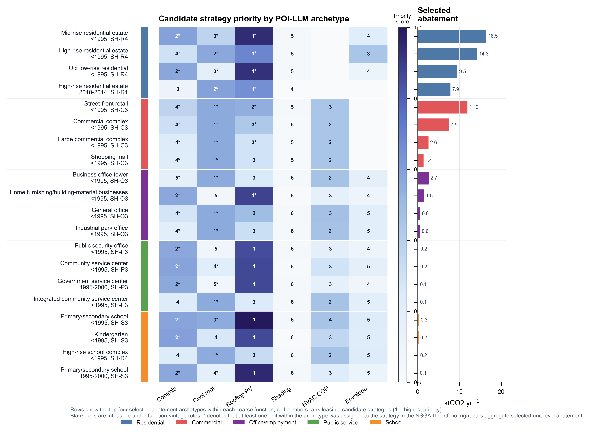
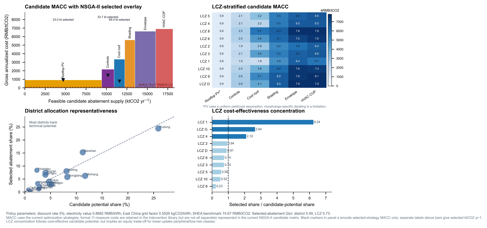

Shanghai urban retrofit decision support
Agentic microclimate-aware decarbonization
Explore NSGA-II retrofit allocation, semantic decision units, RAG constraints, and critic-agent audit traces from the Shanghai case study.
Selected comparison
Legend
Interactive 10-model benchmark
Building-type retrofit ranking

Policy cost and equity evidence

Budget sensitivity
Mapbox token required
Paste a Mapbox public token to load the accurate basemap. It is stored only in this browser.
3D buildings loading
DeepSeek / local research agent
Ask OptAgent
Advanced trace and evidence
Five-agent workbench